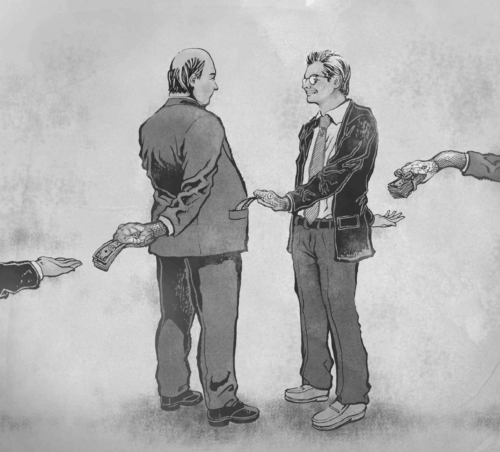

自有人类以来，腐败就一直存在，并且一直是个难题。罗马帝国之所以衰落，腐败和一般性的道德腐朽被归结为主要原因，与此同时，为回应天主教会中被视为腐败的各种问题（包括不正当地兜售赎罪券），宗教改革以同样的广度兴起了。
从传统意义来看，腐败指的是道德上的瑕疵。这个词本身的拉丁语词源意指“糟蹋、污染、滥用或毁坏”，具体取哪种意思依上下文而定。许多世纪以来，腐败观念已经发生变化，在不同文化中也有不同含义。在宽泛意义上，腐败被用来形容对规范的任何不正当的偏离；在过去，以及今天的伊朗等一些国家，这一点通常与宗教规范相关。当代英语中已罕有此种用法，今天这个词主要指与个人的公共职务相关的不当行为，而我们这本小书的关切正在于此。不过，对于什么是不当行为，甚至什么才叫公共职务，是有争议的。围绕着腐败在当今的含义产生的各种争论，是本章的核心内容。
当前关于腐败定义的争论
反腐方面的努力面临的一个重要问题是，分析人士无法就什么是腐败完全达成一致。一种极端观点宽泛地认为，腐败和美一样，都取决于注视者的目光。另一种极端观点从法律角度看问题，认为只有法律明确规定为腐败的行为或疏忽才是腐败。
这种定义上的混乱可以从两个重要的例子中窥见一斑。首先，在联合国自称的“唯一具有法律约束力的全球反腐工具”，即《联合国反腐败公约》（UNCAC）中，就没有对腐败进行定义。个中原因，主要在于公约的制定者们无法就定义达成一致。其次，世界上主要的反腐败国际非政府组织，即透明国际（TI），在20世纪的大多数时间内一直使用两个 定义，而现在却变得态度模糊。在该组织广为人知的调查结果，即每年一度的腐败印象指数（CPI）中，直到2012年使用的都是引述最广的那个定义，即“为获取私利而滥用公职”。这一定义与世界银行等许多机构采用的定义相近，甚至完全一致。但是在所有其他场合，透明国际又将腐败定义成“为获取私利而滥用受托的权力”。两个定义之间的最大差别是，前一个要求涉及国家公职人员，后一个（同时得到了国际刑警组织的认可）则更为宽泛，把诸如私人公司的高级行政人员，甚至纯粹发生于私人企业内部（公司对公司业务，见图1）的败德做法也确定为腐败行为。2012年，透明国际不再在腐败印象指数中为腐败下定义（不过在2013年指数的文字部分，它又“评估了公共部门的印象腐败程度”），此举反映了这方面的一般性混乱。

图1 公司对公司业务：有些人更愿意对腐败作宽泛界定
遗憾的是，即使是透明国际的第一个定义，即狭义界定，也可以作多种解释。“滥用公职”是仅限于本质上属于经济方面的 不当行为（有时称为“现代”腐败），比如挪用公款和接受贿赂，还是也包括人们有时所称的社会方面的 不当行为，或者说“传统”腐败，比如任命亲属（任人唯亲）、朋友或同僚（任用亲信）担任公职，虽然他们并不是最佳人选？政党，尤其是在立法机构中没有席位的政党，算不算占据公职？如果不算，能否以这种狭义界定来指控其腐败？
近几十年来，随着新自由主义思潮蔓延全球，“公共职务”一词面临的另一个问题变得越来越突出。作为一种意识形态，新自由主义提倡弱化国家角色，强化市场作用。它的一个核心特征是，模糊“公共”与“私人”之间的界限。现在，许多国家都把一度由自己承担的任务外包出去，公众却仍然认为这是国家的职责。例如，以往监狱几乎毫无例外由国家负责运行，而现在，越来越多的监狱由私人公司与国家签订合同来运行。如果私人公司雇用的看守人员受贿后让毒品流入服刑人员手中，按照狭义界定，他们是否构成腐败？这样的人占据的是私人 还是公共 职务？我们的看法是，如果国民普遍认为某个职务最终应由国家负责，则滥用此职务牟取个人或团体好处就是腐败。
“私人利益”一词同样远不够明确。国家工作人员受贿而中饱私囊即是腐败，对此无人怀有异议。但是，那些任职于政党的人以组织名义接受性质模糊的捐款，同时表面上看起来又没有获得直接私人 好处的呢？这个例子不像第一个那么一目了然，众人看法各异。
写到这里，应该容易看出的是，对于腐败的一般定义以及如何确定某种行为或某种不作为（疏忽）是否构成腐败，各种不同看法的形成一般都有充足的原因。下面我们来看看这些原因。
腐败观念存在差异的原因
对腐败之所以有不同解读，其中一个原因来自文化。这里，文化可以定义为特定社会中主流的信仰、态度和行为模式，可能与这个社会的主要宗教有关，不论该国曾是殖民地还是宗主国。简单地说，文化深受传统和历史的影响。对于不同腐败观的文化解释，一个例子是，之前提到的“经济”或“现代”腐败一直被称为“西方式”腐败，“社会”或“传统”腐败则被称为“亚洲式”腐败。与社会科学中的许多标签一样，这两个称谓都有问题，会产生严重误导。比如有人声称，提携反哺和庇护关系在亚洲诸社会中很典型，而它们在这些社会——据说——都不算腐败。这种说法至少存在两个严重问题。
首先，对于提携反哺和庇护关系算不算腐败，亚洲各国的主流看法并不相同。比如在新加坡和柬埔寨，看法就不一样。在“西方”，这方面的看法同样有分歧。英语国家和北欧的多数腐败研究专家认为庇护关系是腐败的一种形式，而多数意大利专家不同意这一点。事实上，许多国家进行的民意调查显示，即使是关于何为腐败的“主流看法”，往往也会引起误导。在20世纪末和21世纪初，世界银行在不同国家进行了“诊断式调查”，其中包括一些想象出来的情境，受访者被问及是否认为这些情境是腐败的例子。在许多情况下，受访者的观点分歧很大。面对这些调查结果，“俄罗斯人”或“英国人”对腐败所见略同之类的假设就成问题了。此外，也不应该仅仅因为某国政府发言人声称“这不是腐败，只是我们文化的一部分”，就假定多数国民也这么认为。同样有调查显示，许多国民的确 认为某种行为是腐败，并且无法原谅，但他们却感觉无力挑战精英的看法；那些精英之所以坚持认为这种行为是文化的一部分，不过是在为自己成问题的行为辩护。第二种反驳意见甚至更有说服力，它声称西方也有很多“传统”腐败，而亚洲也不乏“现代”腐败。
下面我们不妨来看一个例子，其中四个国家对人际关系的看法一般被视为文化差异。作为考察对象的四个词分别是俄罗斯人的“布拉特”（blat ） [1] 观念、中国人的“关系”观念、美国人首先提出（现在日益全球化了）的“结网”观念，以及英国人（主要是英格兰人）的“校友裙带”观念。
俄语的“布拉特”一词近年来语义有所变化，在苏联时期指的是人与人之间的一种非正式协议，即以金钱之外的交换来互相帮助。布拉特接近于物物交换的观念，是在耐用和非耐用消费品普遍短缺体制下的一种变通做法。一个农民可能会与电工谈妥，为后者连续两年提供鸡蛋和鸡肉，以换取他为自己的破旧农舍重新接上电线。不过，物物交换只是人和人之间的一种交换形式，布拉特则指形成私人关系，尤其是会让当事人彼此产生信任感和互惠感。
中国的“关系”观念也是指个人或群体之间产生的关联，涉及一种潜在的、长期的相互责任，即互惠互利。我可能以某种方式帮助了一个中国人，从而与他生出友谊或达成工作关系。那个人会感到有义务在未来的某个时刻，也许是多年以后，还我的人情。此人不会忘记我曾有恩于他。
“结网”这一概念正日益普及，它涉及确立非正式的关系，以便为当事各方带来好处。如果我与商务会议或学术会议上认识的人套近乎，心里最终想的是哪天可以从这种接触中求得方便，我就是在试图以关系（可能只是很弱的关系）为基础，而不是完全以我的资历条件来影响那个人。这一条可能算是此处分析的四种非正式关系中最不受诟病的一种，但是从广义来看，它仍可视为腐败的一种形式。
很多人反对把“结网”与腐败扯上关系，英国的“校友裙带”概念则不一样，引起了广泛批评。那些可能连面都没见过的人却给彼此以优待，原因只不过是都上过英国一个小圈子的精英学校。比如，甲、乙和丙都上过显赫的公学（即最顶级的私立学校）。丙在求职，他与乙相识，乙于是鼓动与丙不曾谋面的甲录用丙，即使丙并不是最称职的人选。此处考察的四种非正式关系中，“校友裙带”是最排外的；如果幼年时不曾上过这些精英学校中的某一所，则绝无可能挤入那个内部圈子。此种关系与前三种的重要区别就在这里，它也最容易被列为腐败的一种形式。
对于这四种非正式关联，要强调的主要一点是，虽然互有区别且与特定文化相关，四者之间其实有共通之处。所有四种关系都会区分出自己人和局外人，让自己人享受优待。所有四种关系都被社会上的部分成员视为腐败，虽然相比于在中国批评“关系”的人和在美国质疑“结网”的人，在英国认为“校友裙带”不够正当的人要多得多。总之，文化差异是存在的，但一般没那么大。
当然，从狭义来看，只要上述几种关系不涉及国家公职人员，就都不算腐败。宽泛定义则使门户大开，人与人之间的所有关系，甚至是友谊，也可以称为腐败；这就是本书倾向于从狭义来界定腐败的一个主要原因。
除了文化因素，还有另一个问题：对腐败的定义不同，适用的司法管辖权也不同。这一点可以部分地由文化差异来解释并与之关联，但还有其他原因。主要原因在于立法环境的不同，比如立法者征询了不同专家的意见。在开放和民主的社会，立法可能是议会内外各种群体妥协的结果，各种利益纳入考量的优先顺序在每个社会也有不同。在威权体制下，这种解释就不大可能适用。威权体制通常比民主体制更为腐败，统治精英的选择一般是，或者不进行明确的反腐立法，从而不作法律上的界定，或者有意使此类法律含混不清。他们想维护自己的特权地位，宁愿不制定可能被用来削弱这些特权的法律。
最后一个原因是，分析人士有时是出于方法论上的原因而采用狭义界定的。比如，德国的一位知名学者在一项分析中决定把腐败主要定义为贿赂，因为这样更为直接、概念清晰，不用把社会腐败等更有争议的内容包括进来。
腐败的分类
在详细讨论本书对腐败所持的主要观点之前，有必要考察一下分析人士对不同类型的腐败进行分类的部分方法。
阿诺德·海登海默通常被尊为腐败比较研究之父，这位学者从“多数国民的看法可能与精英不同”这一点出发，把腐败颇为有用地区分为“黑色腐败”“白色腐败”和“灰色腐败”。海登海默深知精英和普通国民有时对现象会有不同的感受，于是把黑色腐败定义为精英和大众双方的多数成员都加以谴责并希望惩治的活动，白色腐败虽然在形式上仍被视为腐败，但两个群体多少都会加以容忍，并不想看到当事人受到惩罚。灰色腐败则是指这样一些活动，精英和大众对其看法各异，甚至在这两个主要群体内部也存在着重要分歧，包括矛盾心理。
海登海默所作的另一个三分法是把腐败分为公职取向的、市场取向的和公共利益取向的。第一种关注的腐败是指公职人员有违职务预期的行为，可由官员获取不正当个人利益的欲望来解释。市场取向的观点对腐败的解释是，公职人员把职务看成牟取私利或办理私事的资源。他们所能提供的和索取的（即能收取多少贿赂）取决于公职所能提供的好处或服务的供求情况，简言之即取决于市场行情。最后，公共利益取向看重的是公职人员不正当的自肥行为对公众造成的伤害。
往往还有第三种区分，把腐败分成“食草型”和“食肉型”。1970年代早期，在关于纽约市警察局腐败情况的报告中，纳普委员会首创了这两个词。前者指官员对贿赂来者不拒，后者所指的腐败则更有掠夺性，官员实际上是主动索贿；前者有时也称为被动腐败，后者则称为主动腐败。与此相关的是对敲诈性腐败和交易性腐败的区分。在前一种情形下，受贿者向当事人施压，促其行贿，基本上等同于食肉型腐败。在后一种情形下，双方当事人（受贿者或行方便者与行贿者或求方便者）更为平等；双方基本上都出于自愿，像是在谈一笔交易。
许多官方反腐文件中进行的分类，初看之下似乎将同样的现象称为“食草型”和“食肉型”腐败，因为“被动”看起来不过是前者的另一种表述方式，“主动”也不过是描述后者的另一个词。现实中，它们却不是这么用的：第一个词通常指行贿，第二个词则指受贿。这种用法存在问题，因为“主动”和“被动”在如此应用时，暗指接受贿赂的人——官员——比所谓的“施主”责任要小。按照这样的区分，一个点拨车主、说行贿可以逃避超速罚款的警察就可以算是被动腐败，车主则是主动腐败。这两个词若用在另一些情形下可能更容易接受，比如某公司向采购主管施压，让其接受贿赂，而该主管此前一直洁身自好；但若用于国家官员从平民或企业那里敲诈钱财，则非常具有误导性。更进一步而言，如果说国家官员公认地应该为普通公民甚至商业企业树立榜样，那么就能明显看出为何如此用词会引起混乱。
第五种分类是分成小型（低级）腐败和大型（高级或精英）腐败。前者指普通公民在日常生活中可能碰到的各类腐败，比如在驾车时或者申请扩建房屋许可时。大型腐败，顾名思义，指精英层面的腐败，比如政治人物接受某个群体的贿赂，批准一项对他们有利的立法，或者某位部长无视顾问的建议甚至规章的约束，为一项大型住宅项目放行以换取贿赂。如果采纳腐败的宽泛定义（即包括完全属于私人企业内部的自肥渎职行为），就会有许多腐败是公司层面的，因而更接近于大型腐败。
遵循大致相同的思路，世界银行自2000年以来区分了“行政（或官僚）腐败”和“收买国家”。后者被当时共同任职于世界银行的乔尔·赫尔曼和丹尼尔·考夫曼称为“大型腐败的一种形式 ”（强调为作者所加）；2000年，他们和杰兰特·琼斯（也来自世界银行）一起，把收买国家定义为：
自首创以来，该词的用法已经被其他分析人士扩展，比如纳入了有组织犯罪为影响立法进行的不当努力。赫尔曼、琼斯和考夫曼把“行政腐败”定义为：
许多分析人士自此也扩展了该词的用法，于是任何与规则的执行相关的不当行为或不作为都可称为行政腐败。
与“主动”腐败和“被动”腐败这两个词一样，“收买国家”一词的一个缺陷是，它可以被解释为暗指行贿的人比受贿的人更应受到谴责。最初推广这些概念的世界银行官员们强调，他们的本意不在于此；这些概念主要针对的是受贿的国家官员。如果采纳把重点放在腐败官员身上的词，比如“出卖国家”而不是“收买国家”，误解的可能性就会减小。
拉斯马·卡克林斯提出了一种分类方式，比世界银行的更为复杂。她重点关注的是中欧和东欧的后共产主义转型国家，把腐败行为分成三种基本类型，对每一类又进行了细分：低级行政腐败、官员为牟取私利侵吞资产，以及通过腐败网络收买国家。第一类和第三类腐败基本上与世界银行的分类相同。但卡克林斯提出的第二类腐败是一种重要补充，此种腐败近年来在许多转型国家都能发现。后共产主义国家的分析人士一般称其为“权贵阶层私有化”。这一过程普遍出现在1990年代的许多中欧和东欧国家，在那里共产主义时代的往日精英，即权贵阶层，能够在前国有企业出售过程中以各种方式（比如从购买者处获取回扣，或者以压倒性的低价自己直接购买）占据道德上不光彩的优势。
相关概念
许多现象与腐败有重叠或相类似。腐败本身就是一个充满争议的概念，既可作狭义也可作广义解释，于是有人会在密切相关的诸概念之间进行区分，还有人则希望把它们看作腐败的变化形式。有鉴于此，下面所作的区分将带读者认识一些主要术语，一般认为它们与腐败相关联。
贿赂与腐败
我们用英语谈论“贿赂与腐败”这一事实本身就意味着两者之间关系密切。但是，正如之前对社会腐败的讨论所表明的，腐败可以表现为不正当的工作关系，即某种形式的偏袒，从而不一定涉及贿赂。此外，某些官员会利用职务之便盗用公款；这是另一种不涉及贿赂的腐败。反过来，贿赂也会完全发生在私人企业内部；这构成广义上的腐败，但就狭义来看并非腐败。
贿赂与礼物
判断特定行为是否构成腐败，最复杂的问题之一就在于如何区分礼物与贿赂。在许多亚洲文化中，赠礼不仅不算行贿，拒不接收或者视之为实际上的贿赂还是无礼的。这是文化差异的一个例证；在大多数亚洲国家，不仅精英，连多数国民都认为向来访者赠送礼物以示热情好客既是一种礼貌，也是一种必要。相反，许多西方人对于接受礼物是有保留的。正如在确定腐败的恰当边界时经常适用的，这个问题不能简单地以非黑即白的态度观之。况且，西方人在这个问题上有时会在不经意间言不由衷；许多经理会一面对亚洲式的“赠礼”颇有微词或心生不快，一面却认为在圣诞节向私人助理赠送礼物，以感谢其上一年度的勤奋和忠诚并无不妥。
这个问题并无明确的解决之道，但在大多数情况下，我们可以通过考察以下六个变量来合理区分礼物和贿赂：
1.送出物品者的意图 。送出“礼物”的人是否暗地里或明确地期待某种回报？如果不是，则贿赂以及后续可能发生的腐败并不成立。
2.接收物品者的预期 。接受“礼物”的人是否认为必须以某种方式加以回报？如果不是，接受礼物的行为构成腐败的可能性就小得多。
3.送出物品的时机 。如果一个有求于人者，比如想要获得许可建造一栋高楼的人，在主管官员做出决定之前 给他送了份“礼物”，几乎一定会构成贿赂。如果礼物是在最终决定完成之后 送出，并且有所求者此前并未暗示若获得许可则有回报，这样的礼物就不大可能构成贿赂。
4.“礼物”的价值 。显而易见，给老师送个苹果与送她一辆崭新的奔驰轿车完全是两码事。事实上，这种区别是程度上的，而不是性质上的。然而，越来越多的国家和国际组织现在意识到，程度上的差别相当之大，对这两种行为应该加以区分。界限设在哪里？这是一个难题。本书第六章会重新探讨这个问题。
5.法律观点 。这是一个正式的变量，要求考察特定国家或组织的法律或规章是如何规定的。比如，新加坡的警察不得从快餐商店接受免费饮品，澳大利亚的部分地区则没有这种规定。该变量与其他五个变量的不同之处在于，它可以从这个列表中拿掉而不影响后者的适用性。
6.能感知到的社会对于此事的接受度 。与上一个变量不同，此变量关注的是问题的非正式方面，即多数公众的看法。前文已经指出，不同的文化对什么是腐败以及腐败的可接受程度有不同看法。确认这些差异的一个途径是，通过媒体等的调查、分析来确定各国对特定行为或不作为的主流态度。
公司和白领犯罪
我们记得，透明国际于2000年修改了其更倾向于采纳的定义，承认腐败也可以纯粹发生在私人企业内部（公司对公司腐败）。然而，这一态度不过是无谓地扩展了腐败概念，毕竟对于国家和私人企业，是有充分理由区别对待的。多数情况下，如果对某家私人公司的产品或服务不满，我可以另选一家；市场经济就是以竞争为基础的。但是国家却处于实质上的垄断地位；比如，如果不信任法官或警察，我也无法转请他人来执法。更何况，在产生纷争的场合，国家充当着个人之间和组织之间的仲裁者，即公断人；商业企业却不扮演同样的角色。这是两个充分的理由，表明把国家和私人企业区分开来是有意义的。
最后，要想描述私人企业内部为获取私利而滥用职权或者私人组织中的违法乱纪行为，有几个非常恰当的现成词语。形容前者的最常用词语是“白领犯罪”，广泛用于形容后者的词语是“公司犯罪”。两个词都存在一个主要缺陷：媒体上报道的“犯罪”，大部分事实上并未违法，而只是不被社会接受（即不正当而非不合法）。因此，通常更可取的是把两者分别称为“白领行为不端”和“公司行为不端”，不过如果违反了法律，则宜于称其为特定场合犯罪。
有组织犯罪
有组织犯罪和腐败之间一般有相当的重叠和互动；事实上，如果犯罪组织和腐败官员之间没有勾结，有组织犯罪就不会如此逍遥法外。两种现象间也有很多相似之处。犯罪团伙和腐败官员都追求背离社会和国家利益的既得利益。有组织犯罪和腐败都可能涉及一些活动，这些活动在多数国民看来是不正当的，但从专业角度来看并不违法（因此用有组织犯罪 来形容某些犯罪团伙的活动有时并不准确）。一些分析人士把有组织犯罪与腐败区分开，认为前者必然涉及暴力（不论是实际使用还是威胁使用）而后者则不然。但是，警察有时也会未经国家许可而使用或威胁使用暴力。
概念上的一个关键差异是，腐败涉及官员（若采纳广义的腐败，则还包括私人企业主管和专业人员），而有组织犯罪不涉及，除非存在官商勾结。另一个差异是，腐败官员有时是以个人名义活动，即成为所谓的害群之马，而有组织犯罪必然是团体活动。
另一种定义
在多数情形下，世界银行以及许多其他组织和专家使用的狭义界定是恰当的，虽然并非完全没有问题。要想界定得更为细致或详细，我们可以使用五项标准来判定一项行为或不作为（比如为了获取回报而故意视而不见）是否构成腐败；一项行为或不作为要构成腐败，必须满足所有五项标准（见表框1）。
这套标准符合本书对腐败倾向于采纳的狭义界定。更倾向于广义界定的人，要套用这套标准，只需稍加调整，比如把“公职”替换为“被托付权力的职务”。本书的余下部分，虽然重点放在官员（狭义）腐败上，也会引用来自企业界甚至体育界的例子。
表框1 腐败的判定标准
●行为或不作为必须涉及身居公职的个人或群体，不论是经选举还是任命入职；
●该公职必须在决策权力、法律执行或国家防卫方面具有一定程度的权威；
●官员的行为或者在本职工作上的不作为，必须部分出于个人利益或其所属组织（比如政党）的利益，或者同时出于两种利益，并且这些利益必须背离国家和社会的终极利益；
●官员的行为或不作为部分或完全地于暗中发生，并且其明知自身行为会或可能会被视为不合法或不正当。如果对于行为失当的程度不确定，官员就会选择不受检验，即不让自己的行为接受所谓的阳光测试 （允许公开审查），因为他们希望自己的利益最大化；
●行为或不作为必须在相当比例的人群或/和国家的认知中属于腐败。这最后一条标准有助于克服解读腐败时的文化差异问题。
前文已经表明，对于何种行为构成腐败以及为何构成，并没有广泛共识。然而，以狭义界定即对公职的私人滥用为起点，却得到广泛赞同，纵然私人滥用和公职这样的词也有多种解释。在多数情形下，应用这五条标准进行检验能明确地判定特定行为或不作为是否构成腐败，本书后面几章也会应用这些标准。在这些检验之外，各人要判定特定情形是否构成腐败，则必须基于所谓的“大象测试”，即“很难描述，但看到时我会知道”。